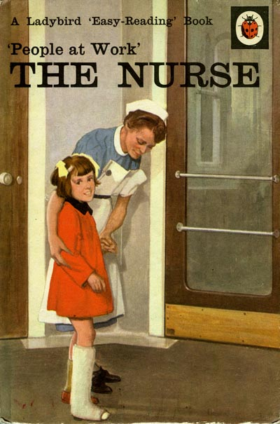

Country Joe McDonald, singer, songwriter, and social advocate, co-founder of the Country Joe & the Fish rock band remembered for his performance in Woodstock, recently donated his Florence Nightingale collection to the UCSF archives. This International Nurses Day, May 12th, we asked Joe several questions about his unusual archive that contains 7 oversize boxes of printed materials, ephemera, and books as well as a website “Country Joe McDonald’s Tribute to Florence Nightingale.”

Country Joe McDonald performs a tribute to Florence Nightingale at UCSF in the fall of 2013 (photo by Elisabeth Fall)
1. What got you interested in the life of Florence Nightingale?
I heard Lynda Van Devanter, an Army Vietnam War nurse speak in 1981 at a symposium on the problems of Vietnam veterans. She challenged other veterans, saying we ignored the needs and service of women in the military. I took it to heart and promised her I would write a song for her. But I knew nothing of nursing except the name Florence Nightingale. I looked in the encyclopedia and it said Florence Nightingale had gone to nurse English soldiers at the request of the English government during the Crimean War in 1854. That she was an upper class woman and she suffered a nervous disorder for the rest of her life. Vietnam veterans were suffering from PTSD as a result of their experiences. I found this similarity very interesting and wanted to know more. I went to a well known used book store in Oakland and found two books on her life. One was Sir Edward Cook’s book. The other, Cecil Woodham-Smith’s book. I read them both. And that was the beginning of my journey.
2. For how long have you been documenting her story?
It was 1981 when I first heard Lynda speak, so it is over thirty years.

A glass “magic lantern” slide (reversed) of the painting by Jerry Barrett, “the Mission of Mercy: Florence Nightingale Receiving the Wounded at Scutari” (National Portrait Gallery, London). A photo of a black-and-white engraving has been hand-colored. Read more about this painting on the Country Joe McDonald’s website.
3. How do you select materials to add to your collection?
At first it was not a collection. But I needed to learn about England and the Victorian Era in order to understand what I was reading. So one thing led to another. Then I decided to visit the places important to her life. Wherever I went I would pick up stuff about the place I visited and her. She was such a huge social phenomena, such a famous person after the war, that lots of stuff was created about her and using her name. Since she was a recluse lots of it was just made up to satisfy the desire of the public to have a bit of her. She was famous on the level of Kim Kardashian or Princess Kate. I found this very interesting. So there was stuff that was intelligent and accurate and stuff that was pure fantasy and frivolous.
I tried to get it all. I trolled Amazon and Internet book sites grabbing whatever I found that was not too expensive. Since I had a web person who was building my professional home page for me I decided to create a home page for her. Using the facts and stuff I found out about her. We started with a time line of her life. It just grew and grew. It seemed to me to be endlessly interesting. I was amazed at the diversity of her life and nursing. I found it very hard to stop adding things.
4. What is your favorite item in this collection?
It is difficult to pick one item. But I will mention a copy I made of many of the pages of her third edition of Notes On Hospitals. I got an original through interlibrary loan from a library in Pasadena. Such a thing could never happen today. There are three editions of Notes On Hospitals. I have a facsimile of the original which is part of the collection. But the one always mentioned in writings about her is the third edition.
Much to my amazement the copy I got from inter library loan had a signature of Adelaide Nutting the famous nurse historian on the cover page. I felt like an archaeologist making a discovery. I guess the copy the library had once belonged to Adelaide Nutting. I probably could have just kept the copy and no one would have cared much. Such is the treatment Florence Nightingale is often given. She even predicted this. When the Edison Company recorded her voice she said that “some day when I am no longer a memory, just a name.” And today that is seems the case. Everyone knows her name but very little about her except the common folklore. I could not in good conscience keep the original. So I made copies of many of the pages. Even that would not be allowed today. And those pages are part of the collection. Looking at those pages one sees what a theoretician, innovator and statistician she was.
5. You wrote several songs about nurses, where can we listen to them?
I have had several ideas about how to tell the story of her life. I thought of a documentary called “On The Trail Of Miss Nightingale” where a host visited and talked about all the locations important to her life. Then, because I am a songwriter a few songs about her and nursing just came to me. Then I got the idea to write an opera about her life and wrote some more songs. Then I got the idea of a spoken word and song one man show about her life and nursing complete with projected slides. Then I tried to write a film treatment. A couple of the songs made it onto CD’s. I made a CD of four nurse songs called “Thank The Nurse” and still have a few of those around. I am currently working on a new album and it will include several new songs about her and her sister. Over the years I have performed and talked about Florence Nightingale only a dozen times. I am amazed at the lack of song and film and about Florence Nightingale and nursing. Even though she is probably the most written about woman in history. She is never named as one of the famous and important women in the 20th century.
I think her image is tangled up in the convoluted thoughts and disinformation about women in general and nurses in particular. In today’s world there seems to be a lack of interest in history and an emphasis on the present and making a living. Perhaps that makes good common sense in today’s market place. But I still believe that her story is exciting, important and should be told.
6. Why did you decide to build a website telling the story of Florence Nightingale, what else does it include?
It started as a simple idea. I wanted to show how interesting her life was and how important a person she was. We started with a timeline containing important events in her life from before her birth to her death. Each time I learned or discovered something new we added it. It is the only such site in the world. That just happened one thing at a time over a period of almost twenty years. It is impossible for me to say what it includes. I will just say it includes everything I think is important to her life. You will not find some of that information any place else. I hope that UCSF Nursing School will continue to add to the site now that it is archived by the university.
7. Do you know how many visitors it attracts?
It is hard to interpret visitors to a site. But I will guess several hundred a month. Many of them are school children doing studies on famous women. I would be interested to know who uses the site. It was built for my own entertainment so I never had in mind visitors really.
Cover of the book from the Country Joe McDonald’s Florence Nightingale collection, “People at Work: The Nurse,” 1963.
8. Now that your collection and website are preserved at the UCSF Archives will you continue adding materials and updating the site?
I doubt that I will add much more to the site. But you never know. It would be wonderful if UCSF students doing nurse history would add to the site. There is now a new generation growing up with the internet and computers and they certainly could expand the site.
9. For many years you have being performing a show based on the story of Florence Nightingale and other war nurses, where can our readers view it?
There really is no where to view it. I thought over the years that there should be some film or video made so that it could perhaps be used as an educational tool but that never happened. I do not perform much any more. I did do a short performance of spoken word and song in a Berkeley book store a few months ago around the subject of War Nursing. That was the first time I did that. I used material from the Crimean War, World War I and the Vietnam War with a subject theme of “burn out.”
10. Do you have any nurses in your family?
My wife is a Labor and Delivery nurse and RN midwife. My brother retired after 37 years as a nurse and then nurse practitioner. My daughter just graduated and received her RN license. My niece is a nurse at UCSF Hospital and her husband is an RN. As an aside, my mother’s name was Florence. It is said that most of the women of the 19th and 20th century named Florence were named after her. She was named Florence after the Italian city of her birth, Florence .
11. What do you want to wish the nurses around the world on this International Nurses Day that is celebrated on the birthday of Florence Nightingale?
I hope that nurses are able to appreciate the great sacrifices that those early pioneers made creating the wonderful profession of nursing. I hope that they are able to be proud of the work they do. I want them to know that we appreciate what they do daily often saving lives and allowing us all to lead happy and healthy lives. And I hope that they are able to take the day off and treat themselves to some well earned R&R.


{kind=link}
{kind=link}